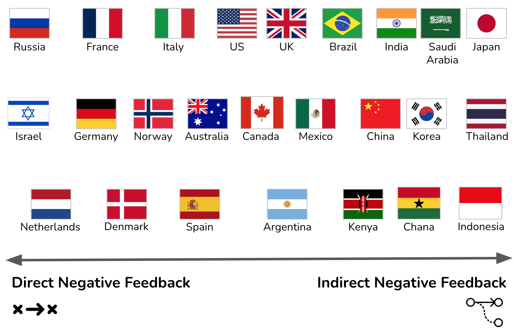
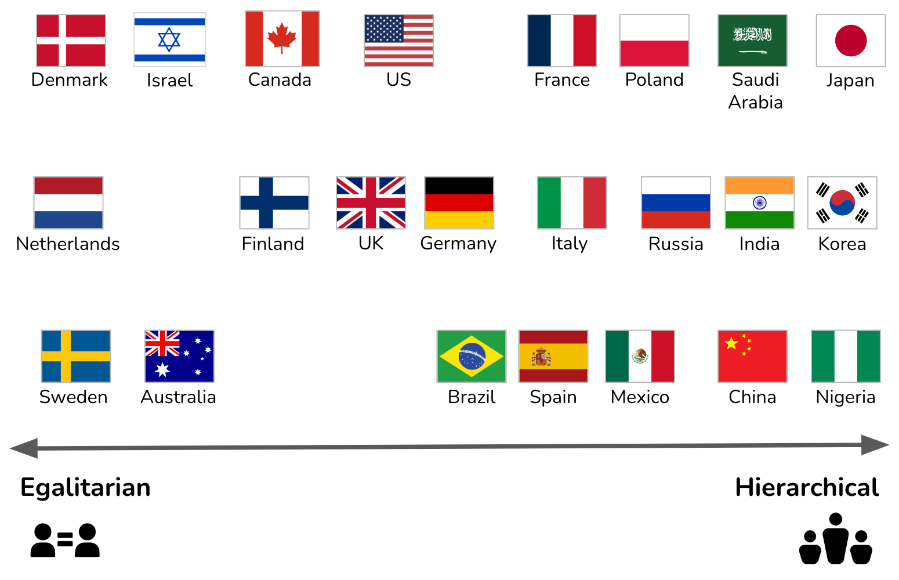
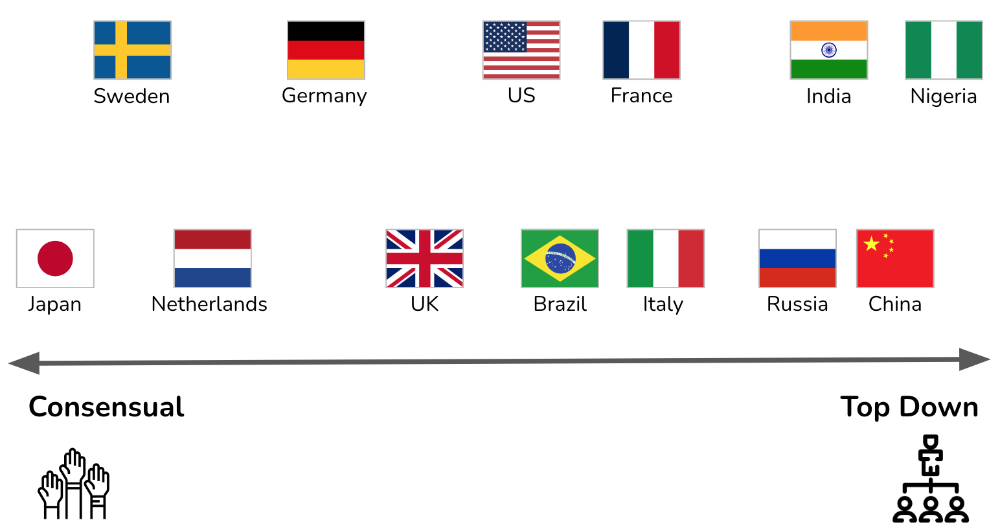

The Culture Map: Architects' Culture Mindfield Compass

IN THIS SECTION, YOU WILL: Get an introduction to The Culture Map, a helpful tool for architects to work harmoniously with people from various cultures and backgrounds.
KEY POINTS:
- I have found the work of Erin Meyer, The Culture Map, to be a beneficial tool for architects to work harmoniously with people from various cultures and backgrounds.
- Meyer’s model contains eight scales, each representing a key area, showing how cultures vary from extreme to extreme: Communicating, Evaluating, Persuading, Leading, Deciding, Trusting, Disagreeing, and Scheduling.
In multinational organizations, architects will need to work with many different cultures. The work of Erin Meyer, The Culture Map, is a beneficial tool for working harmoniously with people from various cultures and backgrounds. Awareness of cultural differences is even more important for architects, as they are bridging diverse cultures and domains (technology, business, product, organization).
Meyer’s model contains eight scales, each representing a key area, showing how cultures vary from extreme to extreme. The eight scales describe a continuum between the two ends which are diametric opposite or competing positions:
- Communicating – Are cultures low-context (simple, verbose, and clear) or high-context (rich deep meaning in interactions)?
- Evaluating – When giving negative feedback, does one give it directly or prefer being indirect and discreet?
- Persuading – Do people like to hear specific cases and examples or prefer detailed holistic explanations?
- Leading – Are people in groups egalitarian or prefer hierarchy?
- Deciding – Are decisions made in consensus or made top-down?
- Trusting – Do people base trust on how well they know each other or how well they work together?
- Disagreeing – Are disagreements tackled directly, or do people prefer to avoid confrontations?
- Scheduling – Do people see time as absolute linear points or consider it a flexible range?
The Culture Map shows positions along these eight scales for many countries. These profiles reflect the value systems of a society at large, not all the individuals in it, so if you plot yourself on the map, you might find that some of your preferences differ from those of your culture.
Communicating
Architects need to be good communicators. But what do we mean when saying someone is a good communicator? The responses differ wildly from society to society.

Meyer compares cultures along the Communicating scale by measuring the degree to which they are high- or low-context, a metric developed by the American anthropologist Edward Hall (Figure 1).
In low-context cultures, good communication is precise, simple, explicit, and clear. People take messages at face value. Repetition, clarification, and putting messages in writing are appreciated.
In high-context cultures, communication is sophisticated, nuanced, and layered. Statements are often not plainly stated but implied. People put less in writing, more is left open to interpretation, and understanding may depend on reading between the lines.
Architects should be able to understand and adapt to different communication styles. But when actively communicating, I find it crucial that architects provide low-context explanations. Architects will deal not only with the diverse cultural backgrounds of people but with different professional communities (technology, product, marketing, sales, finance, strategy), each with their own specific cultures and buzzwords. To bridge such diverse communities, communicating in a culture-sensitive and buzzword-free way is a valuable skill for any architect.
 Figure 1: Countries on the Communicating scale.
Figure 1: Countries on the Communicating scale.
Evaluating
Architects need to provide constructive criticism of the plans and ideas of others. All cultures believe that people should give criticism constructively, but the definition of “constructive” varies greatly.

The Evaluating scale measures a preference for frank versus diplomatic feedback. Evaluating is different from the Communicating scale; many countries have different positions on the two scales. According to Meyers, the French are high-context (implicit) communicators relative to Americans. Yet they are more direct in their criticism. Spaniards and Mexicans are at the same context level, but the Spanish are much franker when providing negative feedback (Figure 2).
Providing constructive criticism in the right way is crucial for architects to make any impact. Sometimes the same feedback will lead to different reactions, even within the same teams with members from diverse backgrounds. Being too positive in some cultures leads to underestimation of the significance of the feedback. Being too negative may result in pushback and rejection. In my experience, architects need to adapt their feedback to the audience and do lots of “duplication” by presenting the same feedback differently to diverse groups.
 Figure 2: Countries on the Evaluating scale.
Persuading
Architects frequently need to persuade others about decisions and plans. How you influence others and the arguments people find convincing are deeply rooted in culture’s philosophical, religious, and educational assumptions and attitudes.

One way to compare countries along the Persuading scale is to assess how they balance holistic and specific thought patterns. According to Meyers, a Western executive will break down an argument into a sequence of distinct components (specific thinking). At the same time, Asian managers tend to show how the pieces fit together (holistic thinking). Beyond that, people from southern European and Germanic cultures tend to find deductive arguments (principles-first arguments, building the conclusion from basic premises) most persuasive. In contrast, American and British managers are more likely to be influenced by inductive, applications-first logic (Figure 3).
Architects must be able to persuade in both applications-first and principles-first ways. In addition to cultural differences, the additional complication comes from talking to diverse audiences. For instance, C-level executives typically have less time and may prefer applications-first presentations (“get to the point, stick to the point”). While in other parts of the company, you may need to spend a long time carefully building the argument following the principal first approach. I typically aim to prepare well for both, having a short management summary and easily retrievable all supporting evidence.
 Figure 3: Countries on the Persuading scale.
Figure 3: Countries on the Persuading scale.
Leading
Architects have informal and sometimes formal authority. The leading scale measures the degree of respect and deference shown to authority figures.
This scale places countries on a spectrum from egalitarian to hierarchical. Egalitarian cultures expect leading to be in a democratic fashion. Hierarchical cultures expect leading to be from top to bottom (Figure 4).

The difference in leadership styles can make an architect’s work challenging. The same leadership style can lead different people to perceive an architect as weak (no leadership) and too hard (a dictator). The only way to create a working situation is to have an open conversation with the team and agree on expectations and the leadership approach.
 Figure 4: Countries on the Leading scale.
Deciding
Architectural work is about making decisions. The Deciding scale measures the degree to which a culture is consensus-minded.

According to Meyers, we often assume that the most egalitarian cultures will be the most democratic, while the most hierarchical ones will allow the boss to make unilateral decisions. But this is only sometimes the case. Germans are more hierarchical than Americans but more likely than their U.S. colleagues to build group agreements before making decisions. The Japanese are both strongly hierarchical and strongly consensus-minded (Figure 5).
Similar to the Leading scale, the difference in deciding styles can make an architect’s work complicated. I have been in situations where the different members of the same team have had radically different expectations regarding decision-making: some were sitting and waiting for an architect to come up with a decision, and others were offended by any decision that was not complete consensus. Again, the only way to create a working situation is to have an open conversation with the team and agree on expectations and the decision approach. One approach I used is a hybrid option: agreeing with a team to try to come up with a decision based on consensus but delegating the decision to an architect when an agreement was impossible.
 Figure 5: Countries on the Deciding scale.
Trusting
Architects need to build trust with multiple stakeholders. The culture map scale defines two extremes; task-based cognitive trust (from the head) and relationship-based affective trust (from the heart).

In task-based cultures, trust is built cognitively through work. We feel mutual trust if we collaborate, prove ourselves reliable, and respect one another’s contributions.
In a relationship-based society, trust results from weaving a solid affective connection. We establish trust if we spend time laughing and relaxing together, get to know one another personally, and feel a mutual liking (Figure 6).
Without trust, architects’ impact is limited. The best way for architects to build trust is to align their working methods with the rituals of the teams they are working with. In particular, finding time to attend events such as all-hands or off-site gatherings of groups and having regular 1:1 meetings with key stakeholders can be an efficient way to gain trust.
 Figure 6: Countries on the Trusting scale.
Figure 6: Countries on the Trusting scale.
Disagreeing
Architectural work may lead to many disagreements and conflicts. Different cultures have very different ideas about how productive confrontation is for a team or an organization. This scale measures tolerance for open debate and inclination to see it as helpful or harmful to collegial relationships (Figure 7).

Like the Leading and Deciding scales, architects need to have an open conversation with the team and agree on how to disagree. Disagreeing is an unavoidable part of the work of architects that want to make an impact. Due to the higher diversity of their audiences, architects must also be extra attentive to the cultural aspects of disagreeing to avoid taking too personally what others consider a routine work discussion.
Figure 7: Countries on the Disagreeing scale.
Scheduling
Architects will need to participate in many meetings and projects. All businesses follow agendas and timetables, but in some cultures, people strictly adhere to the schedule. In others, they treat it as a suggestion. The Scheduling scale assesses how much people value operating in a structured, linear fashion versus being flexible and reactive. This scale is based on the “monochronic” and “polychronic” distinction formalized by Edward Hall (Figure 8).

Due to more exposure to diverse audiences, my rule of thumb is that architects should be on time according to the more linear interpretation and tolerate those who are not. But more importantly, adapt to the overall rhythms.
 Figure 8: Countries on the Scheduling scale.
Figure 8: Countries on the Scheduling scale.
Rules
I also found Erin Meyer’s four rules on how to bridge the cultural gaps:
- Rule 1: Don’t Underestimate the Challenge. It’s not always easy to bridge cultural gaps. Management styles stem from habits developed over a lifetime, which makes them hard to change.
- Rule 2: Apply Multiple Perspectives. Where a culture falls on a scale doesn’t in itself mean anything. What matters is the position of one country relative to another.
- Rule 3: Find the Positive in Other Approaches. People tend to see the negative when looking at how other cultures work. But if you understand how people from varied backgrounds behave, you can turn differences into the most significant assets.
- Rule 4: Adjust and Readjust, Your Position. It’s not enough to shift to a new position on a single scale; you’ll need to widen your comfort zone to move more fluidly back and forth along all eight.
Keep An Open Mind
While cultural generalizations, like the culture map, can be helpful, it is crucial to recognize that they are just that - generalizations. Not all individuals from a particular culture will fit neatly into these categories, and there can be significant variation even within a single culture. It is best to approach cultural differences with an open mind and a willingness to learn.
To Probe Further
- The Culture Map: Decoding How People Think, Lead, and Get Things Done Across Cultures, by Erin Meyer, 2014
- Navigating the Cultural Minefield, by Erin Meyer, Harvard Business Review, 2014
- Increase Your Team’s Performance with The Culture Map, by Andreea, 2019
- The Culture Map Lecture Notes, 2023
Questions to Consider
- How would you describe your communication style based on Erin Meyer’s model? Are you more low-context or high-context?
- How do you prefer to give and receive feedback? Do you prefer a more direct or indirect approach?
- When it comes to persuasion, do you prefer specific cases and examples or more holistic explanations?
- How do you see leadership? Do you prefer a hierarchical or egalitarian structure in your work environment?
- What’s your approach to decision-making? Do you prefer consensus or top-down decisions?
- How do you build trust? Do you base it more on personal relationships or work-based achievements?
- How do you handle disagreements? Do you prefer to tackle them directly or avoid confrontations?
- How do you perceive time and schedule? Do you consider time linear and absolute or a flexible range?
- What strategies do you use to adapt to the communication styles of different cultures and professional communities?
- How do you adjust your leadership or decision-making approach when dealing with team members from different cultures?
- How do you maintain trust in multicultural environments? What challenges have you faced in this regard?
- How do you handle disagreements in a multicultural context?
- In which areas of Meyer’s model could you improve?
- How would you handle a situation where different members of the same team have radically different expectations regarding decision-making or disagreeing?
Doing Architecture ← Doing Architecture: Introduction |
Doing Architecture Managing Organizational Complexity: Six Simple Rules → |